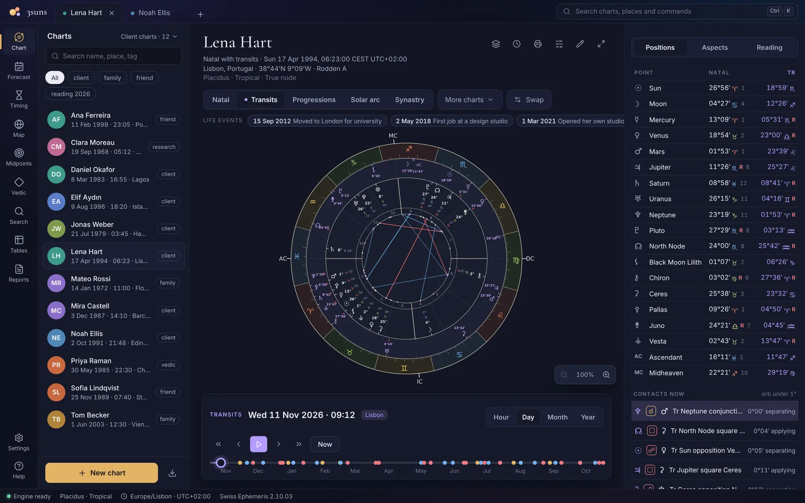
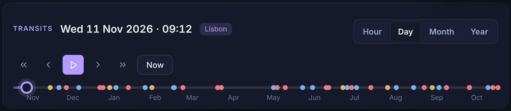

Play the sky around the chart
Put the transits around any chart and move through time by the hour, day, month or year, or press play. The contacts within a degree are listed beside the wheel and update as you go. Click a life event and the chart jumps to that day.
- Hour, day, month and year steps
- Play and pause
- Contacts in orb
- Life events
- Swap inner and outer